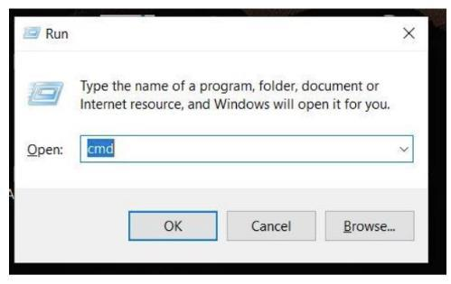
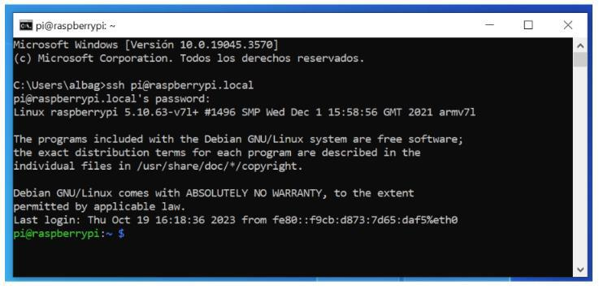
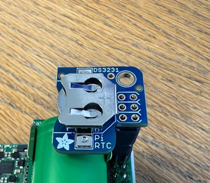
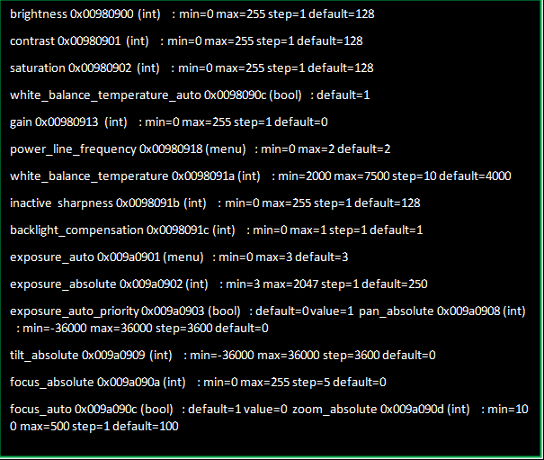
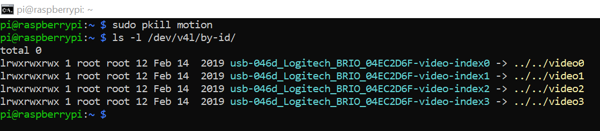
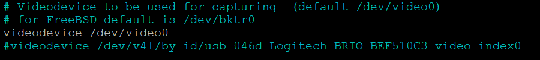
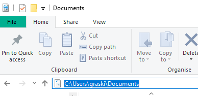
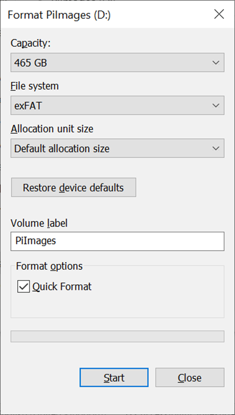
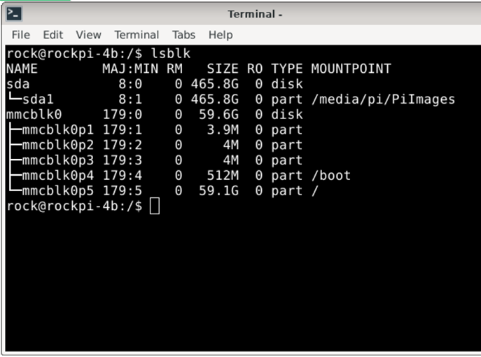

AMI-System Deployment Guide

1. Assembly
1.1 Assembling the AMI System

1.2 Connecting Camera and Light Ring


The camera and lighting cables can be seen in Figure 3. They are coming out of the end of the protective conduit from the back of the camera box. To thread and connect the cables into the electronics box and connect the conduit to the box, please follow the steps below:
- Following the cable coming out of the back of the camera box, unscrew and remove the
thin black plastic conduit connector nut (step 1 in Figure 3)
- Thread the USB and power cables through the hole in the electronics box (step 2 in
Figure 4)
- Push the conduit and connector as far into the hole (same as step 2) as it will go, then
replace the nut removed in step 1, passing it over the USB and power cables, then screwing it onto the conduit connecting until tight, this should be slightly more than hand tight so use a spanner (Step 3 in Figure 5).
- Connect the USB into the port shown in Figure 4.
- You need to connect the black and red exposed wire to the upper right terminal of the
voltage regulator (Step 5 in Figure 5). To do this use a small flathead screwdriver to unscrew the screw on the front of the terminal. Place the metal part of the wires in the


holes - black wire into the left (0V) slot and red wire into the right (+Vo) slot - then screw tight again. Once tightened give the wire a light tug to check it is securely in place.
- To connect the LepiLED:
- Feed the LepiLED cable through the gland on the right side of the electronics
box.
- Screw the nut on the inside of the box to tighten. Also screw the cap on the
- Connect the brown and blue wires to the right-hand side of the bottom red and
black terminal block. Blue neutral wire into black terminal, brown live wire into red terminal. To do this use a small flathead screwdriver to unscrew the screw
hole on the right side of the terminal block and then screw tight again, once tightened give the wires a light tug to check they are securely in place. Note this step can be fiddly.
1.3 Connecting to power – benchtop and/or battery box
- A cable extends from the bottom of the electronics box and terminates in two wires: one
brown and one blue.
- If using the battery box, these should be passed through the hole in the back of
the battery box and connected to the DIN rail mounted terminals, labelled
up) and Output 1- (blue cable into black plastic terminal) (see Figure 6). Fasten using a small flat head screwdriver.
- If using a benchtop power supply, connect the terminal wires - brown to the
positive output terminal (usually red), blue to negative output terminal (usually black). The power supply should be set to just above 12 V (e.g. 12.5 V) and just above 2 A (e.g. 2.5A).
- To turn the system on, press the MAN(-) key until the text at the bottom of the screen
says ON ON.

- To turn the system off, press the MAN(-) until the text reads OFF OFF.
Note: When the AMI is in the field, set it to AUTO OFF, so that it follows the program. IWhen it turns on by the set times it will read AUTO ON. Therefore, if you are deploying the AMI when it is scheduled to be on, you will be setting it to AUTO ON (there will be no
1.4 Connecting to the Pi
The simplest way to use the Raspberry Pi is to connect to it via an ethernet cable and
connecting it to your laptop. For this, follow the steps below.
(Alternatively, you can connect to the Rapsberry Pi by plugging in a USB keyboard and mouse to the USB ports, and a monitor via a micro-HDMI to HDMI cable.)
- Connect one end of ethernet cable to the port in the electronics box (on the left side left
- On your laptop, open the command prompt by pressing the Windows key + R. In the Run
window that opens, type 'cmd' and click 'ok'.
- A terminal will open where you need to type: ssh pi@raspberrypi.local
- Press enter and then type the password: "Nature17" (it probably won't appear as you
type it).
- Press enter again and you will see the following welcome screen:


If asked at any point to provide your user credentials again, use the beneath details. Feel free to change these.
Username: “pi†Password: “Nature17â€
command:
To restart continuously taking pictures, use the command:
1.5 Setting the Real Time Clock (RTC)
Make sure the RTC (Adafruit DS3231) is plugged into the correct position on the headers. There will only be 6 available slots which are raised for the RTC (Figure 7). Make sure battery (CR 1220) is inserted into the Real time clock, this should last for 5 years with an accuracy of around +/- 2 seconds per day.
To check/set the correct time, follow the following steps:
- Open a terminal:
- If connecting via HDMI, there should be a black icon in the desktop menu that
you should click, or press ctrl+alt+t.
- If connecting via an ethernet cable, the command line is available immediately
after logging in, without further action.
- Check the current Time Zone:
- If necessary, update the Time Zone:
Note: You can review available Time Zones using “grepâ€:
- If you updated the Time Zone, verify that it has been updated correctly:
- Update the system’s date and time (YYYY-MM-DD):
- Verify the date and time:



- You will need to write the time into the RTC battery with the following command:
- Confirm that the RTC battery time is correct:
1.6 Check Camera Settings & ID
All systems provided are set up with the correct camera ID and the standard camera settings. The ID will only need to be updated if a new camera is used, and the camera settings may need adjusting if the image is not adequately focussed. You will need to connect the Raspberry pi to a monitor or ethernet cable, as done above.
1.6.1 To check camera settings:
- Put the testing paper on the board in front of the camera. If the testing paper is not
available, use a piece of paper which contains writing and several colours.
If you have previously stopped the AMI from taking pictures with the command sudo pkill motion, you should restart motion with the command sudo motion.
- Open up the folder on the SSD containing the images and check the following:


- Image clarity and focus
- Colour
- Timestamp
- The camera settings can be changed to improve the image quality (see Figure 8 for
settings that can be changed). You will find the camera settings with the following command:
4.
- When you are happy with the camera settings, you will need to delete the test pictures
that have accrued:
- First, it’s a good idea to stop the camera from taking pictures with the command:
sudo pkill motion
- Then delete the images: sudo rm -r /media/pi/PiImages/*
- Note: This will delete all the images on the drive, so if you have images that you
want to keep on the drive, do not run this.
1.6.2 To set the camera ID:
- Open the terminal and stop the motion software
- Find the correct camera ID
- Choose the ID that ends in "index0" and copy the full file path
- Locate the motion configuration file
- Type in ctrl w, followed by videodevice, then enter, which will bring you to the correct
location. Insert the copied file path
- Save changes: ctrl O
- Repeat with the camera figuration file


- Change the camera ID in the camera settings using: sudo nano
/home/pi/scripts/setCamera
- Find the camera IDs: ctrl w /dev, then enter
- Select the replace command: ctrl /, then enter
- Then type or copy in full path with the camera ID. Then enter. Then type A to replace
all.
- Save: ctrl O
1.7 Setting the Timer Relay
1.7.1 Set time on timer relay
- Press the clock key and the MAN key simultaneously to toggle between 12/24 hour clock
mode.
- Keep the Clock key pressed and then press the D+ key to set day.
- Keep the Clock key pressed, then press the H+ key to set hour.
- 00-23 in 24-hour mode
- 01-12 in 12-hour mode
- Keep the Clock key pressed, then press M+ key to set minutes.
- Click the MAN button to get back to the main screen.
1.7.2 Set a schedule
- Press PR to set the schedule for when AMI will turn ON
- Press D+ stepwise for day selection as given below.
- MO TU WE TH FR SA SU (All week days)
- MO TU WE TH FR SA (Exclude Sunday)
- MO TU WE TH FR (Exclude Weekends)
- MO TU WE TH SU (Exclude Friday & Saturday)
- SA SU (Only Weekends)
- FR SA (Only Weekends)
- TU WE TH FR SA SU (Exclude any single day)
- MO/TU/WE/TH/FR/SA/SU (Include Single day)
- MO WE FR (Exclude Alternate day)
- TU TH SA (Exclude Alternate day)
- Press H+ to edit and increment the hour. Use MAN(-) key to decrement hours.
- Press PR to set the schedule for when AMI will turn OFF
- Press D+ stepwise, as above, for day selection. Please note that the OFF day will be the
day after the ON day as it passes 00:00. Eg. If the ON schedule is MO WE FR, the OFF schedule should be TU TH SA.
- Press H+ to set the hour.
- Press the clock button to set the schedule.
- Press MAN(-) to set AMI to OFF OFF until you set the AMI up in the field, where you will
need to set it to AUTO OFF. Note: This will say AUTO ON if you are currently within the programmed ON period.
2. Set-up
2.1 Checks before deployment
- Check that everything within the grey electronics box at the back of the AMI is plugged
and all wires are secure. The box should include:
- SSD card
- Check that solar cables are crimped, ready for use.

2.2 Equipment List
General AMI Solar
screwdriver  Battery (Zarges) box
*Recommended: 120AH 12V Absorbed Glass Mat (AGM) Lead Acid deep cycle or Marine Lead Acid Battery.
**Recommended: 100-watt solar panels in parallel (12V panels) – Max open circuit voltage (Voc) 25V, max short circuit current (Isc) 25A
2.3 Solar Panel set-up
2.3.2 Put together solar rigging
- Clear an area large enough to contain the solar panels and AMI system.
- Lay down the matting and pin it down, use a hammer if needed.
- [Add own instructions for solar rigging set up]
a.
2.3.3 Attach solar panels to rigging
- [Add own instructions]
a.
2.4 AMI set-up
2.4.1 Screw AMI to box and connect (should be done before connecting to power)
- The feet of the AMI trap have screw holes. Put AMI on lid of box and line up holes in AMI
feet with holes in metal box lid.
- Use a black rubber washer, followed by the silver metal washer and screw to screw the
AMI to the box using the ¼ inch allen key. Having a battery in the battery box while you complete this step is helpful as it will act as a counterweight.
- The wire coming out the back of the AMI (with blue and brown ends) should have conduit
and a conduit connector nut (see Figure 9). Unscrew the nut and feed the wires through the hole at the back of the battery box.
- Once through, screw the nut back tightly on the inside of the box, securing the wires in
position.
- Inside the metal box, attach the blue and brown wires to the €˜LOAD’ fuses. Flip up the
“door†of the brown (+1) terminal and loosen the screw with the small flathead screwdriver. Insert the Brown wire to the brown terminal (+1) and tighten the screw until the wire is secure. Repeat with the Blue wire which will be inserted into the black (-1) terminals (there is no “door†to flip in the black terminal).
- Attach the white landing board to the back board of the AMI with clips.
Note: If fuse head is lifted up, the power isn’t running so it’s a good way to disconnect it.
NUT FIGURE 9: CONDUIT CONNECTOR NUT
2.4.2 Connect batteries

- Connect the battery wires to the batteries.
The red wire goes to the positive terminal and the black to the negative terminal. Put the washer on first, followed by the metal loop at the end of the battery wire, another washer and finally the nut on top. Tighten with the 13 mm socket. Note: It is safer to complete the negative terminal first.
- Repeat with the second battery.
- Place the two batteries in the aluminium
battery box, facing the same way .
- Then connect the battery wires with the wires leading to the Sunsaver via the brown
connectors. This will connect the batteries to the solar panels.
- On the Sunsaver, the status LED for the battery should turn green.
2.4.3 Connect solar panels
- The two solar panels will each have a male and female terminal. Connect the two
female terminals with a female connector and the two male terminals with a male connector.
- Add conduit to the two black cables (together or separately). You will need to know
which end will be positive and negative, so ensure that you have a multimeter or mark the ends of the wires before the conduit is added. Note: the charge of the cables will be written on the solar panels. If unsure check with a multimeter.
- Connect the two black cables with the solar panels via the female and male connector.
- You should now have two black cables coming from the solar panels and ending in two
naked ends. These need to be passed through the grey glands on the side of the battery box.
- Connect the wires to the €˜SOLAR’ fuses on the DIN rail by loosening the screw with the
flathead screwdriver and inserting the wire into the terminal. The positive end to the +1
- Use velcro/cable ties to secure loose wires/cables to the metal pole of the solar rig
- If it’s working, we should see a green light in AMI box to show that the batteries are
connected, and we should expect them to be fully charged.
2.5 Checks in Field: Before you leave the AMI system, please check the following:
- Within the battery box, check the solar status light on the SunSaver DL
- If there is no colour, but it flickers every 5 secs, it is not charging, it has not been
connected properly.
- If it is on solid green, with occasional flickers, it is charging.
- If it is red, there is an error.
- Check the battery status lights on the SunSaver DL
- If it is green, the battery is full or nearly full.
- If yellow, it is half full.
- If red, the battery is low (flashing) or empty (solid).
- Turn on AMI system at the timer relay
- Check that the red light on the timer relay comes on.
- Check that the LepiLED(UV light) comes on.

- Turn timer relay back to AUTO OFF.
4. Maintenance
4.1 Check the AMI system
- Check that the timer relay is reading the correct time.
- Clean the solar panels to remove any dirt and leaves.
- Clean the white board with water, if dirt builds up.
- Check inside the grey box at the back of the AMI and inside the main aluminium box for
water ingress and insects to ensure it is still fully sealed.
- Check there is no damage to the wires between the AMI and the solar panels/mains
power source.
- Check that the LepiLED is working by pressing MAN(-) until the screen displays ON ON.
Remember to return it to AUTO OFF by continuing to press MAN(-).
- Replace the desiccant bag in the battery box, if needed.
4.2 Changing the SSD hard drive Every few weeks, you will need to change the SSD card. You can change it less often if needed, but you this will increase the amount of data to be uploaded. The SSD card is located above the timer relay and plugged into the Raspberry Pi.
- You can only change the SSD card when the system is switched off. Therefore, check on
the timer relay that it is on AUTO OFF.
- If not, please turn the system by pressing MAN(-) until the screen displays OFF
- Unplug the SSD card from the Raspberry Pi and plug it into your computer. Open up the
folder containing the images and check that it has been populated and that the images look correct. Check the following:
- Are the images lit evenly?
- Are images in focus?
- Are there any obstructions that you would be able to remove? Eg. long pieces of
grass.
- Is the metadata correct? Have the pictures been taken at the right time?
- Bring back the SSD card for data upload.
- Plug in an empty SSD card to the AMI.
- Make sure all SSD cards have been correctly labelled.
6. Take-down
6.1 In the field
- Turn off the AMI on the timer relay by pressing MAN(-) until it reads OFF OFF.
- Remove and label the SSD card.
- Open the aluminium battery box and unplug the batteries.
- Unscrew the solar wires from the terminals on the DIN rail with a flat-headed
screwdriver and pull the wires out of the battery box.
- Unscrew the wires connecting the AMI to the battery box using a flat-headed
screwdriver.
- The brown load fuse will need to be flipped up to gain access to the correct
screw.
- Pull the wires out of the battery box – there will be a conduit connector nut on
the inside of the battery box that will need to be unscrewed first.
- Using the allen key to undo the screws attaching the AMI to the top of the battery box.
This must be done with care, as the AMI can easily fall to the ground as the last screw is removed.
- Remove the batteries from the battery box.
- Before removing the solar panels from the rigging, you will need to unlatch the 2 x
female connectors and 2 x male connectors. This can be done using the plastic wrench usually provided with solar connectors, or tweezers.
- Remove the solar panels.
- Take down the rigging and matting.
6.2 Storage
- The AMIs should be stored indoors and upright.
- Remove the watchdog battery from the electronics box (see Figure 8) at the back of the
AMI. Charge if needed.
- Check the charge (voltage V) and capacity (ampere-hours Ah) of the car batteries.
- Charge if needed.
- Recondition if needed (under 60% of original Ah). If it is below 50%Ah and
reconditioning does not improve this, the battery cannot be used to power the AMI system.
7. Troubleshooting
7.1 Hardware
7.1.1 Power
If the raspberry pi is not turning on and the timer relay light is not on, there might be a problem with the power source, connection or fuse.
connecting the terminal block and the watchdog.
closed. Also check that it holds a fuse when flipped up. If not present or if it has blown, there are spares in a plastic pocket attached to the SunSaver 20L which can be used to replace it.
there is no light, the battery has not been connected properly.
there is an error with the panels.
multimeter to test at which point the power is being interrupted. Unscrew the sunsaver and put the probes to the solar circuit, the battery circuit and the load circuit.
negative to 1-, use multimeter if in doubt).
7.1.2 LepiLED
If the LepiLED or ring lights are not turning on, you should check the connections at the back of the camera/lighting box. You can do this by carefully unscrewing the gland and seeing if any of the wires are slack, especially the larger black cable which is a USB C cable connecting the camera. This can be plugged back in, if it has come loose. You should also check that the USB C cable and the two wires connecting the camera and lights are securely connected to the Raspberry pi in the electronics box.
7.2 Software
7.2.1 Camera
If the images are grey, and it says unable to connect, make sure that the camera USB C cable is connected properly. If the problem persists, revise the instructions related to the camera in Section 1.6 and make sure you are writing the correct camera ID.
7.2.2 Time/date
If the timestamps on the images are wrong, revise the instructions about setting the Real Time Clock from Section 1.5.
7.2.3 Hard drive (SSD)
In the scenario where the AMI-trap is turned on and the SSD is not connected, or the PI, for some reason, does not detect the drive, the system will save images to the SD card rather than the SSD. To fix this we need to check if images have been saved to the SD card and remove them, and then check that we can get the SSD connected properly. These instructions will take you through these steps.
- Make sure the Pi is turned off and unplug the SSD.
- Switch on the AMI system and connect it to your laptop using an ethernet cable (plug
laptop).
- On your laptop, open the command prompt by pressing the Windows key + R. In the Run
window that opens, type 'cmd' and click 'ok'.
- A terminal will open where you need to type: ssh pi@raspberrypi.local
- Press enter and then type the password: "Nature17" (it probably won't appear as you
type it).
- Press enter again and you will see the following welcome screen:
- Stop the motion software using the command: sudo pkill motion
- Check whether a '/media/pi/PiImages' folder exists:
- Do this by attempting to run the command: ls /media/pi/PiImages
- If the command is successful, it will show you the contents of that directory. So
this indicates that the directory has been incorrectly created on the SD card.


- If the command is not successful, it will show you an error message
something like: cannot access '/media/pi/PiImages ': No such file or directory
- If the directory exists and has files in it, you need to create a backup of these image files
by copying the contents of this directory and pasting the files in a folder on your laptop desktop for you to save for later.
- To do this, open another terminal on your laptop (keep the other one connected
to the Pi open) by repeating step 3 from above. This will open a 2nd terminal window.
- Here, you need to run: scp -r pi@raspberrypi.local:/media/pi/PiImages
<path_to_where_you_want_to_backup_files>
- Replace the <path_to_where_you_want_to_backup_files> with the
actual path to where you want to save the files. This will look something like: C:\Users\<username>\Documents\
- Once you are happy you have backed-up the files, and know where to access them on
your laptop, you then need to delete the directory on the Pi. Go back to the original terminal (where you are connected to the Pi) and run: sudo rm -rf /media/pi/PiImages
- You can now close all the terminals and switch off the Pi using the timer relay.
- Confirm the SSD is working:
- Plug SSD into your laptop (not the Pi) and see if you can access it.
- Also check the name – right click on it, select 'Format...', and check the €˜Volume
label’ is ‘PiImages’:
- Ensure the Pi to completely OFF and then plug in the SSD card.


- Turn on the Pi and then run: lsblk to see if has automatically mounted – the
MOUNTPOINT for sda1 should show as /media/pi/PiImages
